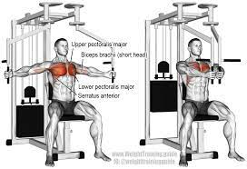
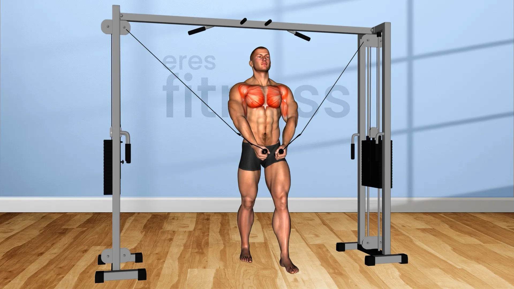

Aquí te presento una rutina de entrenamiento para trabajar el pecho y tríceps. Asegúrate de calentar adecuadamente antes de comenzar y de utilizar una técnica de levantamiento adecuada para evitar lesiones. Realiza de 3 a 4 series de cada ejercicio y entre 8 y 12 repeticiones por serie para desarrollar fuerza y musculatura. Ajusta el peso de acuerdo a tu nivel de condición física.
Este ejercicio se centra en la parte central del pecho.
Usa un banco inclinado y sostén una mancuerna en cada mano. Baja las mancuernas hacia tus pectorales superiores y luego vuelve a subirlas.
En unas poleas doble, das dos pasos adelante con las poleas ya en la mano y las bajas intentando cruzarlas
Este ejercicio se puede realizar de varias formas, como extensiones de tríceps con mancuernas o con barra EZ. El movimiento básico consiste en extender los brazos hacia arriba, manteniendo los codos cerca de la cabeza.
las inmersiones de tríceps se realizan utilizando una barra paralela o bancos. El objetivo es bajar el cuerpo flexionando los codos para luego volver a la posición inicial.
Este ejercicio es similar al press de banca tradicional, pero con las manos colocadas más juntas. Esto pone más énfasis en los tríceps durante el movimiento.